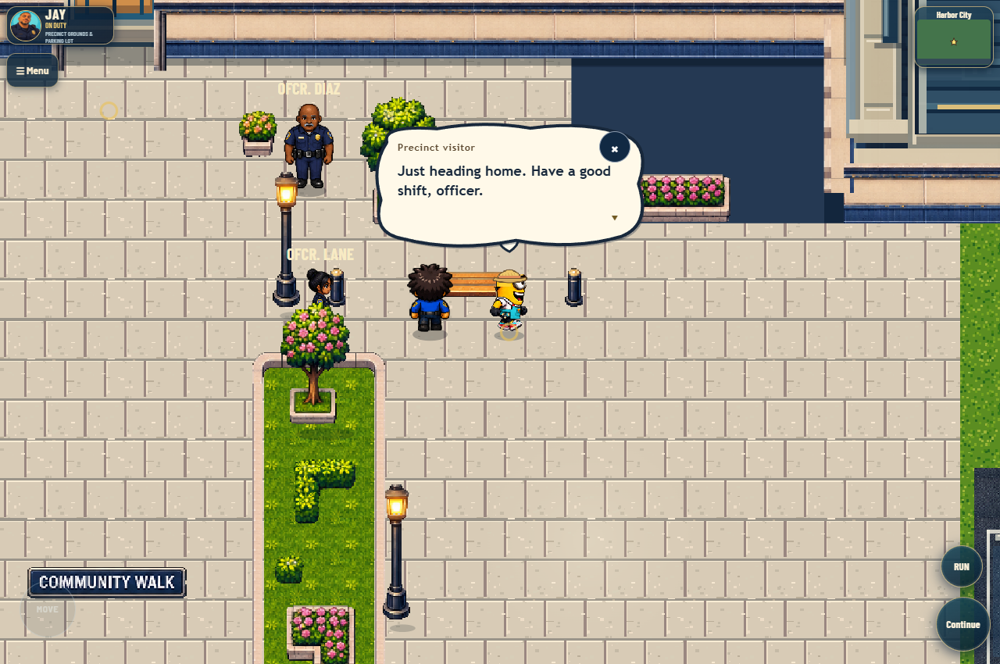
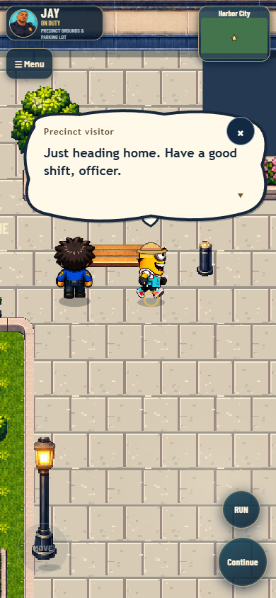
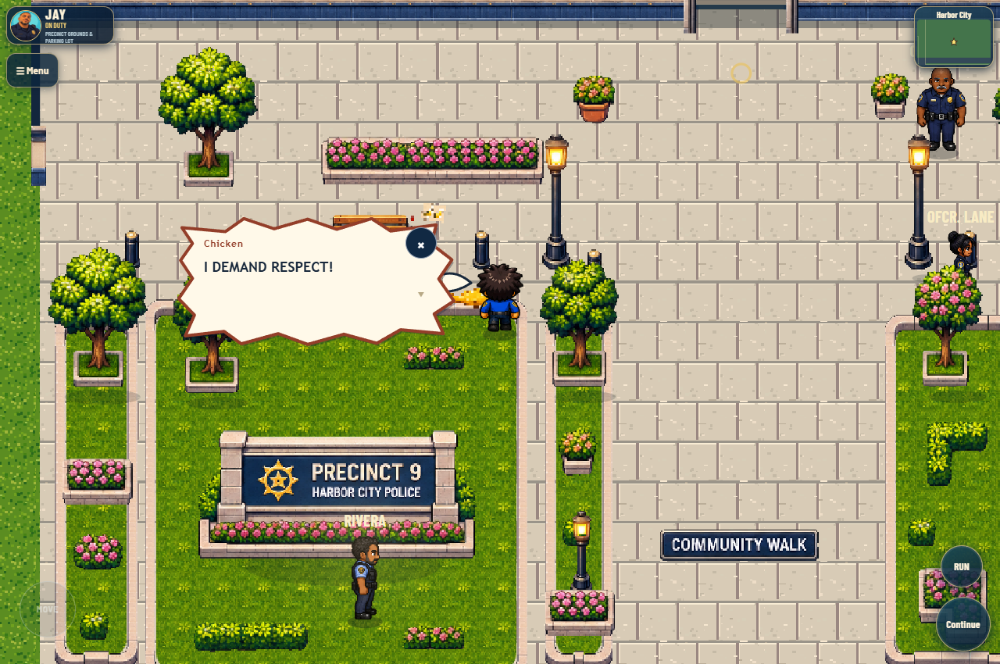
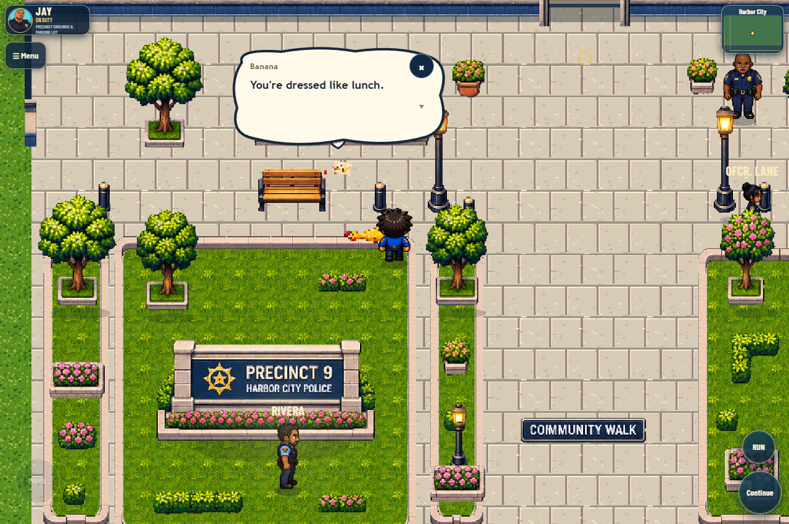
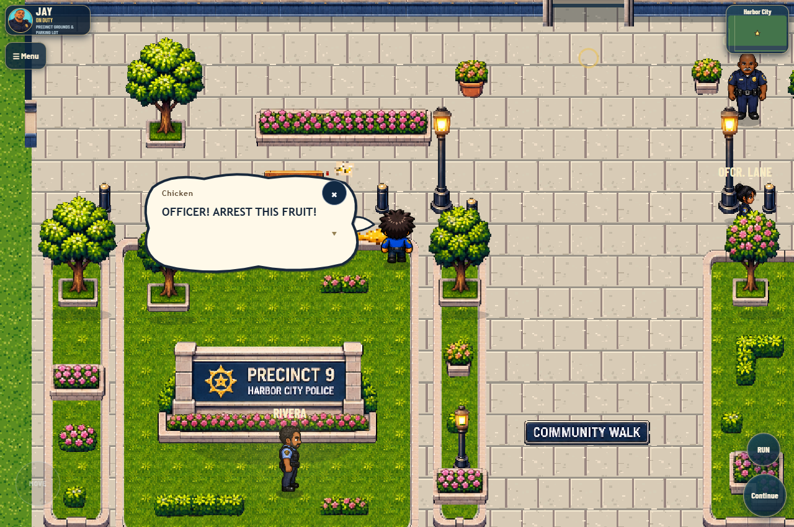
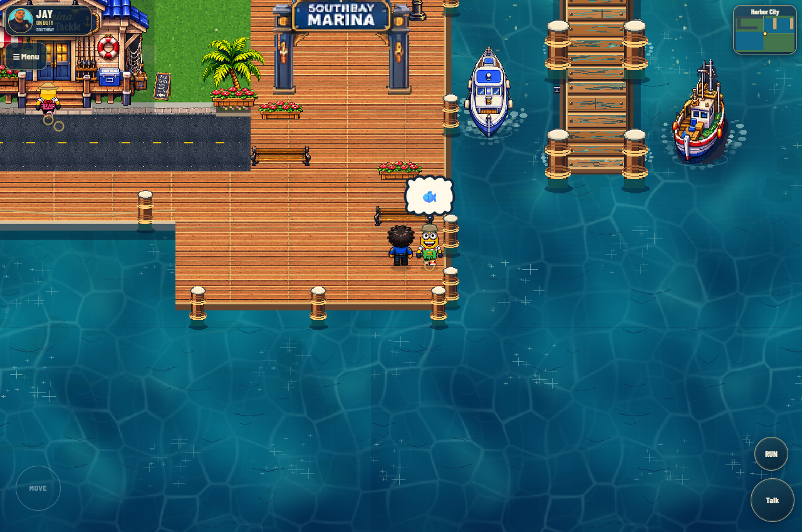
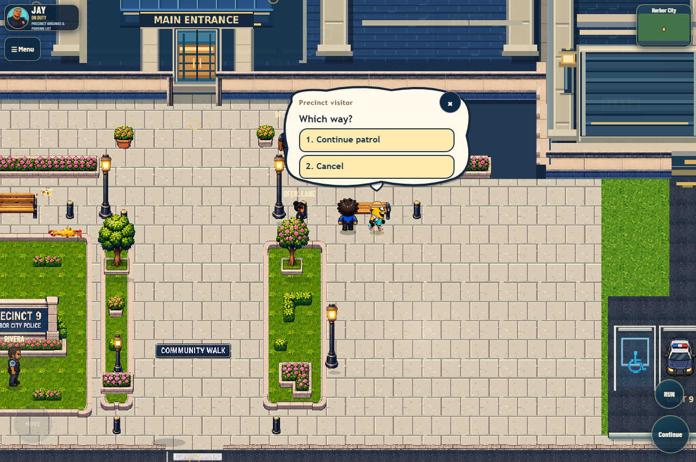
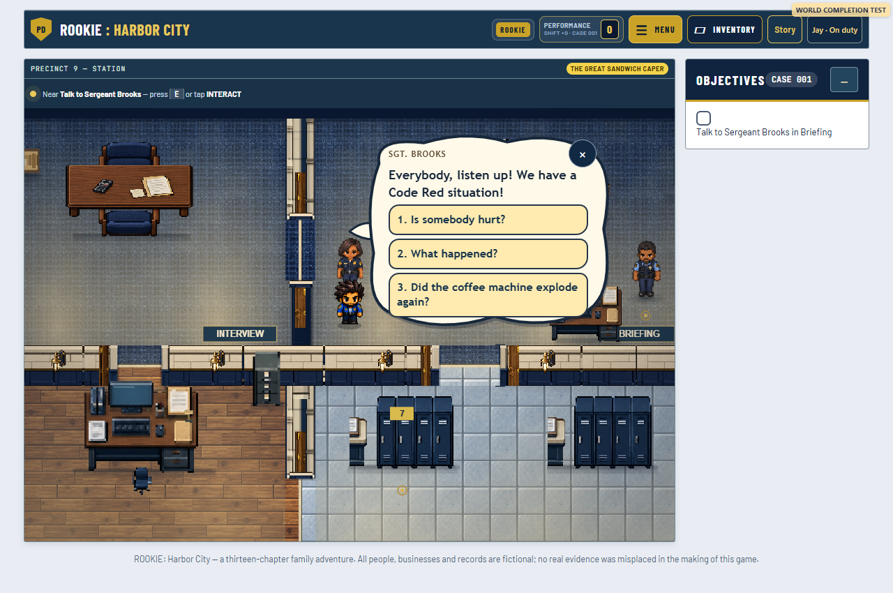

Harbor City · Comic dialogue
Actual gameplay captures: native conversations, choices and progression with expressive balloons.
Loading local test results…

Precinct pilot: original civilian remark, actor anchor and fixed-size lettering.

Mobile portrait, zoomed in. Native tap/Continue controls remain available.

Chicken: angry silhouette with restrained warm outline.

Banana: rounded reply using the existing local prop artwork.

Excited final line; pop/energy effect honors reduced motion.

One nonblocking ambient thought, using the existing speech lifetime.

Original choice buttons and callbacks stay authoritative.

Actual mission branch: Brooks's briefing and subsequent fridge clue passed.
All work stays local. Zombie source, existing art, driving systems and version numbers are unchanged. The full campaign was not replayed; see the report for tested coverage and limitations.